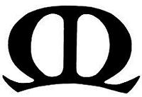
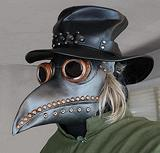

23 August 2019
- The Musica Donavania group has been going through some thoughtful reconsideration. Due to people moving away, in declining health, or changed living conditions, we now have just two hosting households. Both have been putting forth tremendous effort, but we needed to find formats for our events that better served the hosting households.We have had to take some severe steps, including selectively trimming our invitation list. These steps have resulted in some very successful events, achieving the desired balance among music, conversation, and food. We are now interested in expanding the invitation list to include more persons who would enjoy the balanced format. We are open to all ages, cultures, sexual orientations, spiritualities, economic levels, and most political persuasions.
You can get a good idea what our events are like by checking out our
Past Events page - and let us know if
you are interested, music@clovegarden.com.

March 2020 and On
As of October 2021, we have re-started holding events. COVID is not over, but everyone has had plenty of time to get vaccinated, and vaccination is required to attend.=========================== Events below this line are subject to update & confirmation.